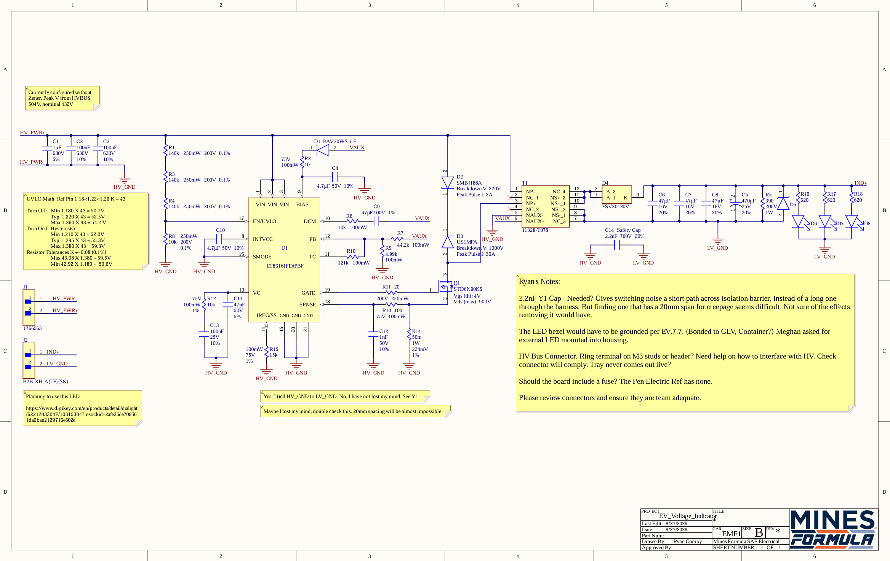
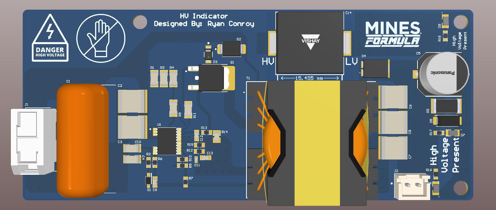

HV Indicator Board
The Problem
FSAE EV rules (EV.5.7) require a visible indicator on the tractive system that turns on above 60V and off below 50V. This must be hardwired to the vehicle-side voltage, with no software control and no dependence on the AIR-closing signal. At its core, it has to work independent of the car's logic, because the entire purpose is to warn someone before they touch a live pack. The board lives inside the Tractive Battery Container, mounted so that the warning LED sits in open air through the container wall.
Requirements
To start, a list of requirements for the HV Indicator was generated to better define project scope.
| ID | Requirement | Status |
|---|---|---|
| ELEC-257 | The system shall keep HV and LV isolated (20mm uncoated, 3mm coated) | Met |
| ELEC-258 | The system shall detect when voltage is above 60V and turn on a green LED | Met |
| ELEC-259 | The system's status LED shall be able to be turned on from an external source for lamp check | Removed (see Challenges) |
| ELEC-260 | The system shall be in compliance with EV.5.7 | Met |
| ELEC-261 | The system shall have no software control | Met |
| ELEC-262 | The status light's states shall be clearly distinguishable | Met |
Design Decisions
No-opto isolated flyback
The LT8316 senses the HV bus directly and regulates a 12V isolated secondary through a transformer (Sumida 11328-T078). With this there is no optocoupler, no microcontroller, nothing that software can touch. This satisfies EV.5.7's "no software control" requirement structurally, not just procedurally.
UVLO divider tuned for the 50V/60V hysteresis band
The EN/UVLO divider sets the ON/OFF thresholds. I went through a few iterations here, first centering the band at 55V, then landing on a 3×140kΩ divider (Yageo thin-film, 0.1%, 25ppm) to hit the rule's actual 50V-OFF / 60V-ON spec rather than a symmetric guess.
Isolation and creepage
This is a safety board sitting in a high-voltage container, so trace spacing is not cosmetic. EV.7.5.7 sets the TS-to-LV clearance/creepage at 3.0mm/20.0mm uncoated (4.0mm creepage if conformal coated). For this board, the coated allowance was used, since the board's physical distance from external HV elements is less than 20mm — plus it adds an additional safety factor.
Challenges
Lamp-test circuit: added, then removed
Early requirements called for an external lamp-check input. Further scrutiny of FSAE rules found that grounded low voltage was not allowed to enter the EV Voltage Indicator system. Therefore, the secondary is a fully isolated 2-wire island. Benefits of this change included board simplicity, lower cost, one less failure mode, and added safety.
Footprint spacing
The Y-cap bridging HV_GND to LV_GND (SMDY1222MY5UDR) has a footprint that I could not route with 20mm creepage in the space available. The solution was to rely on conformal coating, verified with a witness-coupon cross-section after coating.
HV_PWR to HV_GND spacing
Beyond the HV-to-LV spacing spec, the voltage potential on the primary side had its own spacing requirement — 504V peak needs 2.5mm clearance between power and ground traces. This was an error caught during PCB review, flagged and fixed before manufacture.
Status
The board is currently in production for the 26–27 competition year; bring-up will begin in September.

